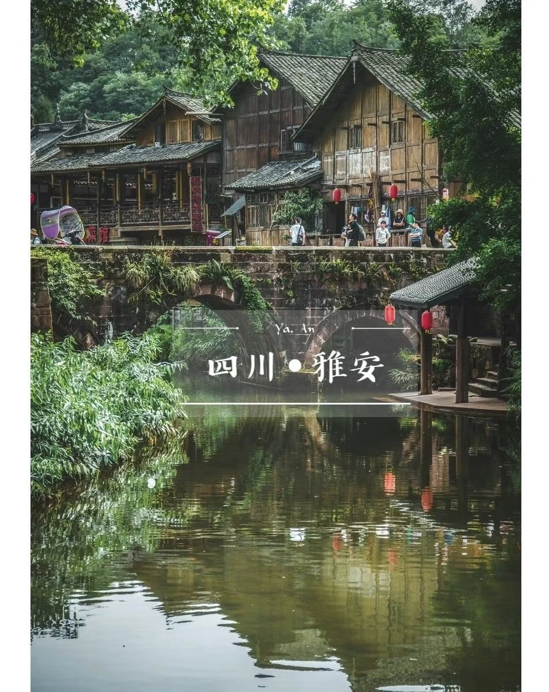

| 首页 | 个人简介 | 兴趣爱好 | 喜爱的电影 | 我的相册 |
首页介绍 |
||
兴趣爱好我非常喜欢听音乐。因为它不用语言来表达，它要用歌声来让人们发现它的美。每天早上起来听两曲，也会不由自主地想哼两句，每天中午放学回家的路上，我也想听两曲，只要有音乐，我就情不自禁地跟着唱。 音乐是一种治愈心灵的力量，它能够以文字无法表达的方式温暖我们的内心。当你感到疲惫、焦虑或情绪低落时，尝试找一首喜欢的歌曲，闭上眼睛，静静地聆听。音乐会带你进入一个安静的世界，让你放松、平静下来。它的旋律和歌词能够触动你的情感，带给你希望和慰藉。无论是柔和的钢琴曲，轻快的流行歌曲还是激情四溢的摇滚乐，每种音乐都有独特的魔力，可以帮助你恢复精力、舒缓压力并提振精神。无论你的心情如何，音乐都可以成为你的心灵疗愈师，陪伴你走过人生的起伏。 |
||
我的家乡四川低调的城市，安逸的城市，别再路过错过！！！ 在四川，有个神奇的现象：外地人去成都，成都人却前往这座小城，度过一个巴适安逸的小假期！ 这里森林覆盖率高，空气质量好，还是熊猫基地，“天府之肺、熊猫家乡”说的就是它。 它有亚洲美丽的观景平台牛背山、360°观景平台达瓦更扎、还有云海,它的名字叫"雅安". 即使它有壮观的山水风光，但很多人却路过它直奔川西、西藏、就算在牛背山看过云海，也忽略了这就在雅安… 即使它被称为“大熊猫的故乡”，是首次发现大熊猫的地方，世界一半以上的大熊猫都生活在这里，野生大熊猫达到了300余只。 它是全省植被覆盖率ZUI高的城市，堪比几十个青城山的森林氧吧，宜居指数高，于是有人说，在别处旅游叫旅游，在雅安旅游，叫修仙! 它是中国的“雨城”，一年200多大都笼吉在雨中，洁致水归雅安人每早都是在仙境中醒来的，特别是夏天，这里的温度总是比外面一下，避暑又避世！ 来雅安，过一个巴适小假期! |
||
|  | ||